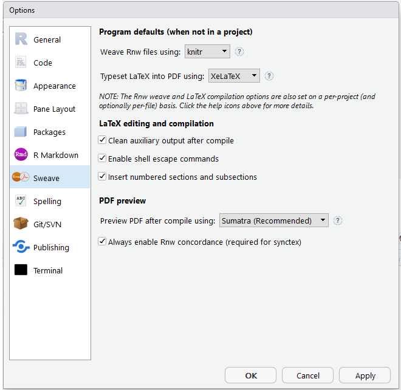

缘于某人用Rmarkdown搞不出中文内容的pdf而引发一场激战之下，TT只能忍气吞声继续走上帮人帮到底的道路，于是网上搜出一大堆关于Rmarkdown生成中文pdf的麻烦事。无奈，众里寻它千百度，最终发现解决问题的YAML模板及相关的解决方案，怕在接下来的日子可能遭受同样的折磨，并以扩充Blog文章为前提，书写此文。
首先，让我们先在RStudio菜单栏选择Tools并点击Global Options。选择Sweaver并按图勾选，最后点OK~

Figure1. 可爱的Global Options窗口
然后.Rmd文件中的YAML模板如下设置：
---
title: "我是一个Test文档的标题"
author: "我是一个Test文档的作者名称"
date: "我是一个Test文档的写作日期"
CJKmainfont: Microsoft YaHei
output:
pdf_document:
includes:
header-includes:
- \usepackage{xeCJK}
keep_tex: yes
latex_engine: xelatex
---注：介个模板用上了大微软的雅黑字体，如若想修改，那请继续摸索摸索。（T.T累了不想改了~）
搞定！Over！愿你的探索之路不与我一样艰辛((٩(//̀Д/́/)۶))
课外补充：